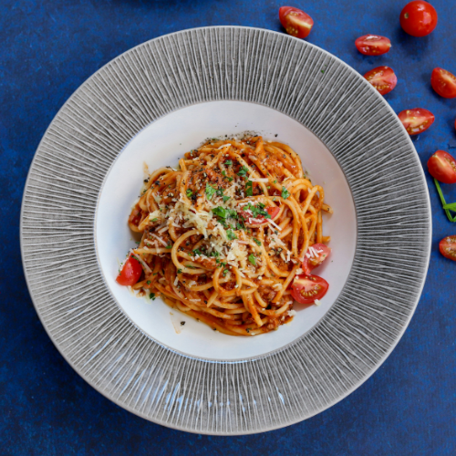
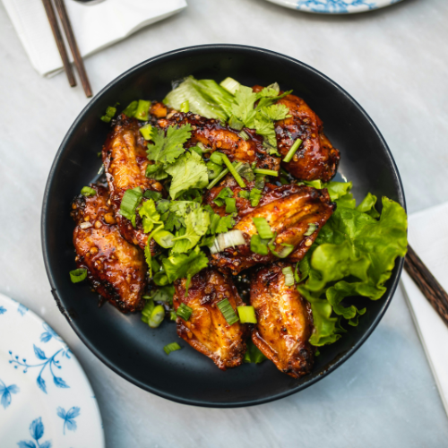
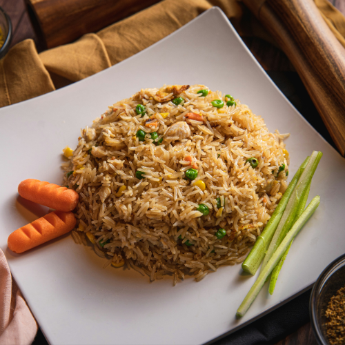
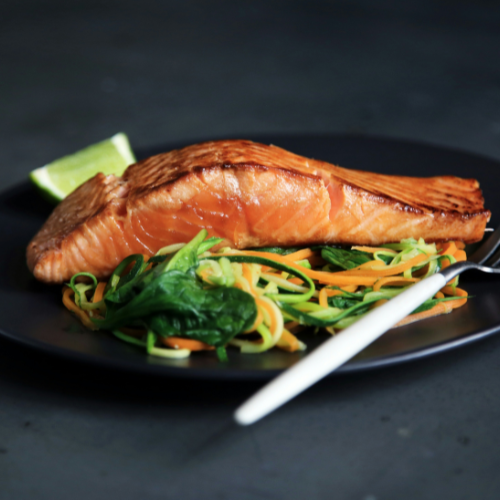
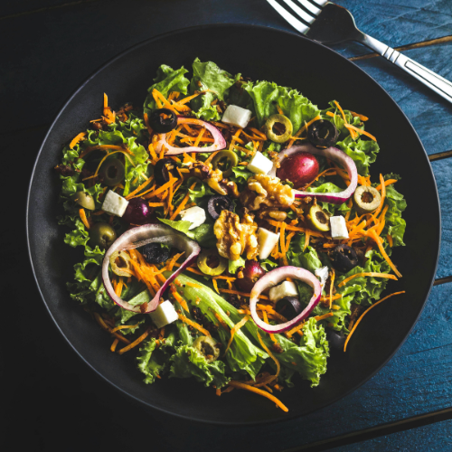

DELICIOUS RECIPES
Spaghetti Carbonara
Savor the classic Italian comfort of Spaghetti Carbonara. Al dente spaghetti pasta tossed with crispy pancetta, creamy Parmesan cheese, and a luscious egg sauce, creating a rich and velvety coating. The simplicity of ingredients harmonizes beautifully, resulting in a dish that's both comforting and indulgent, perfect for a satisfying meal any day of the week.
View RecipeCrispy Hot Honey Chicken
Tantalize your taste buds with Crispy Hot Honey Chicken: Juicy chicken pieces coated in a crunchy, golden crust, kissed with a sweet and spicy honey glaze. Each bite offers a perfect balance of crispy texture and mouthwatering heat, creating a flavor sensation that's irresistibly delicious. Perfect for a memorable meal that's sure to please everyone at the table.
View RecipeSpicy Nasi Goreng
Experience the bold flavors of Spicy Nasi Goreng. Fragrant rice stir-fried with fiery chili, shrimp paste, and an array of spices, enhanced with succulent shrimp, tender chicken, or your choice of protein. Topped with a fried egg and crispy shallots, this Indonesian favorite offers a tantalizing fusion of heat and savory goodness, perfect for adventurous palates.
View RecipeCrispy Pan-Seared Salmon
Elevate your dining experience with Crispy Pan-Seared Salmon. Fresh salmon fillets are expertly seasoned and seared to perfection, resulting in a tantalizing crispy exterior that gives way to tender, flaky flesh. This simple yet elegant dish is bursting with flavor and pairs beautifully with your favorite side dishes for a satisfying and memorable meal.
View RecipeGreek Lemon Chicken Salad
Delight in the vibrant flavors of Greek Lemon Chicken Salad. Succulent grilled chicken marinated in zesty lemon, garlic, and oregano, served over crisp lettuce, juicy tomatoes, cucumbers, and olives. Topped with tangy feta cheese and a drizzle of olive oil, this refreshing salad is a delicious fusion of Mediterranean ingredients, perfect for a light and satisfying meal.
View RecipeClassic Cheeseburger
Savor the timeless taste of the Classic Cheeseburger. Juicy beef patty grilled to perfection, topped with melted cheese, crisp lettuce, ripe tomatoes, onions, and tangy pickles, all nestled between soft, toasted buns. This iconic American favorite delivers a symphony of flavors and textures, promising pure satisfaction with every bite.
View RecipeHomemade Supreme Pizza
Treat yourself to the ultimate homemade delight: Supreme Pizza. Crafted with a golden crust, smothered in tangy tomato sauce and gooey mozzarella. Topped generously with savory pepperoni, sausage, bell peppers, onions, and mushrooms. Baked to perfection, it promises a symphony of flavors and textures that'll make every slice a savory indulgence worth savoring.
View Recipecreamy herb chicken
Savor the exquisite taste of Creamy Herb Chicken. Succulent chicken breasts seared to perfection, bathed in a luscious sauce infused with aromatic herbs. Each bite offers a delightful harmony of flavors, with creamy richness complementing the fragrant herbs. This dish is a comforting and elegant choice for any occasion, sure to impress even the most discerning palates with its delectable simplicity.
View Recipe